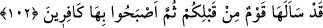

babasının başkası olduğunun söylenmesinden ve dolayısıyla cemiyet içinde utanılacak
bir duruma düşmekten emin olamaz.
“Allah onları affetmiştir.” Bu ifade, söz konusu yasaklamanın sadece onları kötü
durumlara düşmekten korumak için olmadığını beyan etmek için getirilmiştir. Her ne
kadar önceden sordukları bu tür sorular, Allah Teâlâ tarafından affedilmiş olsa bile,
bizzat günah olup hesap ve cezâyı gerektirir.
Âyette onları bu tür soruları sormaktan kesin olarak vazgeçmeye teşvik vardır.
“Allah, önceden sorduklarınızı affetmiş, cezâ olarak size her yıl hac yapmayı
emretmemiş ve sizi âhirette de cezâlandırmaktan vazgeçmiştir. Öyleyse siz de böyle
işleri bir daha tekrarlamayın!”
“Allah bağışlayıcıdır, halîmdir.” Yani, günahları son derece bağışlayıcı ve
görmezden gelicidir. İşte bu sebepledir ki sizi affetmiş ve bu aşırılığınızdan dolayı sizi
herhangi bir cezâya çarptırmamıştır.
102. Sizden önce de bir toplum onları sormuş, sonra da onları inkâr eder olmuştu.
“Sizden önce de bir toplum onları sormuş.” Yani onlar bu sorunun aynısını değil
ama, mahzurları ve yüklediği vebal açısından benzerlerini sormuşlardı. Burada
benzerlerini sorduklarının açıkça belirtilmemesi iyiden iyiye gözdağı vermek içindir.
“Sonra da onları inkar eder olmuştu.” Nitekim İsrâiloğulları peygamberlerine bazı
şeyler sorarlar bunun üzerine kendilerine bir şey emr edilince de onu terk edip,
yapmazlar, sonunda da helak olurlardı. Nitekim Semûd kavmi Hz. Salih (a.s.)’dan deve
“şeklinde tecelli eden bir mûcize” istemiş, Hz. Îsâ’ (a.s.)’ın kavmi de ondan “bir sofra
(Maide)” talebinde bulunmuştu.
Ebû Sa’lebe şöyle demiştir: “Allah size bir takım farzları emretmiştir, onları ihmal
ve zayi etmeyin. Bazı şeyleri yasaklamıştır, onları çiğnemeyin. Bazı sınırlar koymuştur,
onları aşmayın. Unutmadığı halde bazı hususları açıklamamıştır, onları da
araştırmayın.”
Vâiz Hüseyin Kâşifî, Tefsiri’nde der ki:
Bahtı iyi olan kişi, başkalarının halinden ibret alan, boş söz ve davranıştan kaçınan
kimsedir. Bunu şiir olarak şöyle anlatır:
Söylenmesi zaruri olanı söyle, başka sözlere set çek
Gerekli olan işi yerine getir, sonuçsuz işlerden vaz geç
Ebû Yusuf’un ders halkasına çokça iştirak eden fakat her zaman sessiz duran bir kişi
vardı. Bir gün Ebû Yusuf: “Senin neyin var, ne konuşuyorsun, ne de bir şey